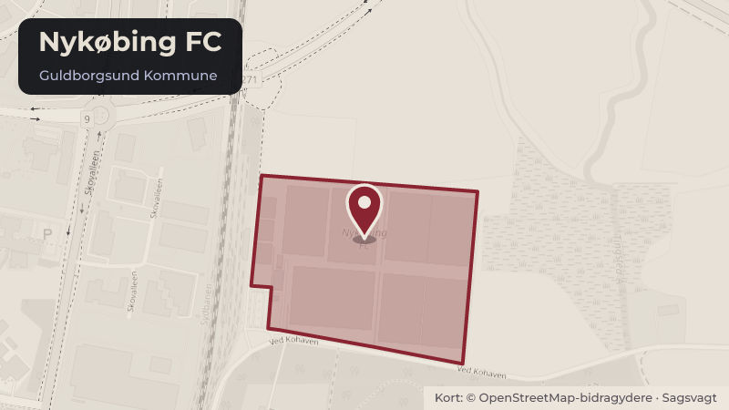

Besluttet 9. juni, Folkeoplysningsudvalget, Guldborgsund
Lokaletilskud - udgifter til rengøring 2025-2026

Kort fortalt
- Forslaget
- Beslutte om NFC skal indkaldes til uddybende forklaring, på baggrund af uafklarede spørgsmål i
- Hvem
- Folkeoplysningsudvalget, Guldborgsund Kommune
- Hvornår
- Tirsdag 9. juni 2026
- Status
- Besluttet. Udvalget beslutter, at NFC skal indkaldes til møde og redegør for deres samlede lokaletilskud og foreningshuset MO.VE, samt fremsender relevant dokumentation, herunder lønsedler. UDVALGTE.Beslutningen er forkortet her. Læs hele beslutningen
Er noget forkert her? Skriv til os
Læs hele sagen Kommunens egen tekst
Indstilling
Centerchefen for Borger & Branding indstiller til Folkeoplysningsudvalget:
1. at beslutte om NFC skal indkaldes til uddybende forklaring, på baggrund af uafklarede spørgsmål i
forhold til de fremsendte oplysninger.
Sagsfremstilling
I forbindelse med bevilling af lokaletilskud til folkeoplysende foreninger d. 12. marts 2026, skabte de høje
udgifter til rengøring i Nykøbing FC sammenlignet med andre foreninger forundring.
Folkeoplysningsudvalget bad på den baggrund administrationen om at indhente og fremlægge bilag og
dokumentation for de ansøgte udgifter for udvalget.
Foreningen har angivet en samlet lønudgift Administrationen har gennemgået det fremsendte materiale og
foretaget en sammenligning med andre foreninger der modtager lokaletilskud til rengøring.
Sammenligning:
Sammenlign ingen er foretaget ud fra følgende parametre:
• Udgifter til rengøring i alt:
◦ Sammenligning med alle modtagere af tilskud til rengøring
◦ Sammenligning med andre fodboldklubber der modtager tilskud til rengøring
• Udgifter til rengøring i forhold til tilskudsberettigede m2 (Bilag 1)
◦ Sammenligning med alle modtagere af tilskud til rengøring
◦ Sammenligning med andre fodboldklubber der modtager tilskud til rengøring
• Udgifter til rengøring i forhold til samlet medlemstal (Bilag 2)
◦ Sammenligning med alle modtagere af tilskud til rengøring
◦ Sammenligning med andre fodboldklubber der modtager tilskud til rengøring
• Udgifter til rengøring i forhold til samlet kontingentindtægt (Bilag 3)
◦ Sammenligning med alle modtagere af tilskud til rengøring
◦ Sammenligning med andre fodboldklubber der modtager tilskud til rengøring.
Det kan, ud fra sammenligningen, konstateres, at Nykøbing FC har de højeste udgifter til rengøring på i alt
975.000 kr., men også de højeste antal m2 med 2.750 m2.Udgift ift. m2:
• Foreningen har den 3. højeste udgift pr. m2 på 355 kr. i forhold til et gennemsnit på 73 kr. for alle
foreninger der modtager tilskud til rengøringsudgifter.
• Foreningen har den højeste udgift pr. m2 på 355 kr. i forhold til et gennemsnit på 337 kr. i forhold
til de 10 foreninger med størst udgift til rengøring.
• Foreningen har den højeste udgift pr. m2 på 355 kr. i forhold til et gennemsnit på 102 kr. i forhold
til de 14 fodboldklubber der modtager lokaletilskud til rengøringsudgifter.
• Foreningen har den højeste udgift pr. medlem på 941 kr. i forhold til et gennemsnit på 133 kr. for
alle foreninger der modtager tilskud til rengøringsudgifter.
• Foreningen har den højeste udgift pr. medlem på 941 kr. i forhold til et gennemsnit på 497 kr. i
forhold til de 10 foreninger med størst udgift til rengøring.
• Foreningen har den højeste udgift pr. medlem på 941 kr. i forhold til et gennemsnit på 207 kr. i
forhold til de 14 fodboldklubber der modtager lokaletilskud til rengøringsudgifter.
• Foreningen har den 9. højeste udgift i forhold til kontingentindtægter på 55,7% i forhold til et
gennemsnit på 23,9% i forhold til alle foreninger der modtager tilskud til rengøringsudgifter.
• Foreningen har den 9. højeste udgift i forhold til kontingentindtægter på 55,7% i forhold til et
gennemsnit på 120,8 % i forhold til de 10 foreninger med den største udgift til rengøring i forhold til
kontingentindtægter.
• Foreningen har den 2. højeste udgift i forhold til kontingentindtægter på 55,7% i forhold til et
gennemsnit på 24,1% i forhold til de 14 fodboldklubber der modtager lokaletilskud til
rengøringsudgifter.
Nykøbing FC har oplyst, at udgifter til tilsyn på 240.000 kr. er bogført under rengøringspersonale, og
Nykøbing FC har bogført en samlet lønudbetaling vedr. rengøringspersonale på 644.960,68, hvoraf
412.873,71 kr. vedrører løbende bogføring af løn til 4 medarbejdere og udbetaling af 232.086,97 kr. vedr.
ompostering af løn til rengøring til 4 medarbejdere der har anden lønnet funktion i foreningen. - Se bilag.
Sammenligningen giver anledning til en generel gennemgang af de store udsving i udgiftsniveauet vedr.
bl.a. udgifter til rengøring og tilsyn, med henblik på den kommende mulighed for fastsættelse af
maksimale grænseværdier for lokaletilskud fra 2027 og frem.
Gennemgang af bilag:
På baggrund af de fremsendte svar og bilag fra Nykøbing FC, kan det konstateres, at de indberettede beløb
er retvisende, dog med den tilføjelse, at udgifter til tilsyn på 240.000 kr. er indberettet under rengøring i
stedet for tilsyn og at der er ansøgt om 100.000 kr. til rengøringsartikler i 2026, mod faktiske udgifter i
2025 på kr. 59.500,00 kr. og forventede faktiske udgifter i 2026 på anslået 55.000 kr.
Det er på baggrund af de fremsendte bilag ikke muligt at vurdere, om de ansøgte og dokumenterede beløb
til rengøringsartikler m.m. samt om lønudgifter til rengøring i sig selv står i et rimeligt forhold til opgaven.
Der er ikke indført grænser herfor frem til 2026.
Der gøres opmærksom på, at der fra 2027 bliver fastsat maksimale udgifter i forhold til m2, medlemstal og
kontingentindtægter på lokaletilskudsområdet på de fleste udgiftstyper, herunder rengøring, for alle
ansøgere. Muligheden er ved at blive indarbejdet i den nye foreningsportal, og forventes klar til
ansøgningsperioden vedr. 2027. Grænserne bliver desuden forelagt Folkeoplysningsudvalget til endelig
godkendelse i forbindelse med den generelle godkendelse af lokaletilskud fra 2027 og frem.
Konklusion og anbefaling:
Administrationen er på baggrund heraf kommet frem til følgende anbefaling:
Dokumentationen giver generelt ikke anledning til at bestride de indberettede beløb og ej hellere hvor vidt
beløbet står i forhold til rengøringsopgavens omfang, da det i så fald bliver en subjektiv vurdering, der ikke
kan baseres på fakta, og om beløbet er anvendt til formålet, og anbefaler derfor at
Folkeoplysningsudvalget beslutter om NFC skal indkaldes til uddybende forklaring, på baggrund af
uafklarede spørgsmål i forhold til redegørelsen.
Sammenhæng til politiske strategier
Sagen understøtter kerneopgaven "Vi skal styrke borgernes muligheder for at mestre egen tilværelse og i
samarbejde med borgerne sikre, at alle kan indgå i relevante fællesskaber" primært gennem følgende
pejlemærker og fokusområder:
• 2: Et sundt og trykt hverdagsliv for alle borgere
◦ Fællesskaber som nøgle for trivsel
▪ Kommunen i partnerskab med civilsamfundet og foreningsliv
▪ Medborgerskab, frivillighed og lokale initiativer
▪ Alle borgere skal opleve, at de kan tage ansvar og at der brug for dem
▪ Udvikling af yderligere mødesteder og væresteder.
Økonomi
Sagen har ingen bevillingsmæssige konsekvenser.
HØRING
Beslutning
Fraværende: Flemming Egholm - Fravær med afbud
Udvalget beslutter, at NFC skal indkaldes til møde og redegør for deres samlede lokaletilskud og
foreningshuset MO.VE, samt fremsender relevant dokumentation, herunder lønsedler.
UDVALGTE
Bilag
- Offentlig
- Bilag-1_Rengøring_foreninger_m2
- Offentlig
- Bilag-2_Rengøring_foreninger_Medlemmer
- Offentlig
- Bilag-3_Rengøring_foreninger_kontingent
- Offentlig
- Offentlig
- Offentlig
- Offentlig
- Offentlig
- Offentlig
- Offentlig
- NFC_Svar til FOU
- NFC_Bogført rengøring pr. hovedkonto NFC2025
- 26-002975-16 NFC_Bogført rengøring pr 7854682_1_Anonymiseret 2
- NFC_Bogført ATP Rengøring 2025 NFC
- NFC_Oversigt og indkøb af rengøringsmidler mv.
- NFC_Oversigt indkøb af rengøringsmidler mv. 2025
- 20260423_Nykøbing FC_Lokaletilskud 2025-2026
Kilde: Guldborgsund Kommune, Folkeoplysningsudvalget, referat fra mødet tirsdag 9. juni 2026, punkt 5. Læs den originale sag hos kommunen.
Steder i sagen: Nykøbing FC